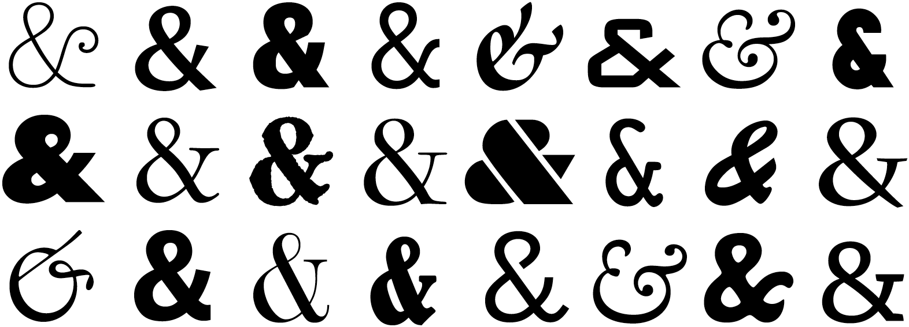

ampersandsUse sparinglyThe ampersand is typographic shorthand for the word and. The ampersand is halfway between a ligature and a contraction—it’s a stylized depiction of the Latin word et.
The ampersand is one of the jauntiest characters. Font designers often use it as an opportunity to show off. Traditional ampersands take the shape of the letters et. Modern ampersands are often more stylized.

Ampersands are completely correct when they’re part of a proper name (Fromage & Cracotte Inc.). Past that, they should be handled like any other contraction: the more formal the document, the more sparingly they should be used. Here and there, but not everywhere.